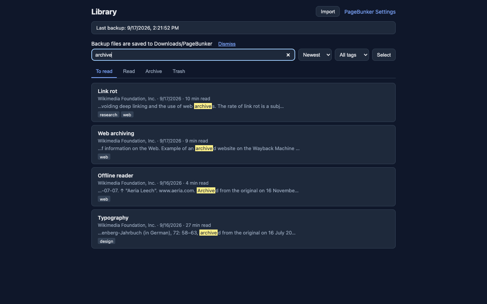

Search the text of several saved articles
Save articles in the desktop browser, then search their text together from the library. No account and no server.
1. Save the article text first
A search for a sentence looks at text that is already stored on this computer. Open the article and save it before you search for words from the body.
- Click the toolbar button, then choose "Save this article".
- Or right-click the page and choose "Save this article".
- Or press
Alt+Shift+L(Option+Shift+Lon a Mac).
PageBunker keeps the title, author, date, and article text, and leaves out ads, menus, and comments. If the page has no extractable article text, the save keeps the link.
2. Type in the library search box
Open the PageBunker library and use the search box at the top. Its empty hint reads "Search articles". One query is checked against every saved article's title, author, site name, tags, and saved text. The open tab does not limit this. To read, Read, Archive, and Trash are searched together, and a selected tag does not narrow it either.
Each word you type has to appear in that article. Put a phrase in quotation marks when those words must stay together, as in "link rot". A quoted phrase counts as one entry. The box uses up to eight entries, and each entry is read up to 100 characters.
Capital letters and surrounding spaces do not change the match. English and Korean text are both searched.
3. Read the matching sentences
Articles that match are listed together. When the words appear in the saved text, the card shows a short passage around the first match, with those words marked. One search can surface the same words in several articles.

A match in the title is listed before a match that is only in the site name or tags, and those are listed before a match that is only in the body. When two articles match in the same way, the one saved more recently is listed first.
A link that has a title but no saved text can still match that title, the site name, or a tag. It will not show a passage from the article until the text is saved.
4. Open an article
Choose a result to open it in the reader. You read the saved text there. Font size, line spacing, width, and the light or dark theme can be changed, and the reader keeps your place.
Reaching the end can mark the article as read. That behavior can be turned off in settings.
5. What a search can and cannot see
- Search covers the library on this computer, across To read, Read, Archive, and Trash. It does not search the open web, and it does not search a page you have not saved.
- Words in the body are found when that body was saved. A Pocket CSV row, or any other imported link, does not add those words by itself.
- The passage on the card is a short extract around the first match in the saved text, not the whole article.
- Clearing the search box returns to the tab and tag you had open, with no search filter.
- One search lists at most 500 matching articles.
Search behavior checked against the extension source in this repository and the public feature description: PageBunker README.
6. Offline reading and the original page
Saved text opens without a network connection, including after the original page is gone. The original address is still kept, and you can open it when that site is available.
7. No mobile app and no sync
PageBunker is a desktop browser extension for Chrome, Edge, Firefox, and Whale. It has no mobile app. Nothing is sent to an account or a server, so libraries do not sync between computers or phones.
The library lives in the browser on this computer. A backup file is also written under Downloads/PageBunker. Copying that file to another computer and restoring it there is a manual copy, not sync. Safari is not supported.
Chrome, Edge, and Whale offer version 1.1.2. Firefox offers version 1.1.1. The 1.1.2 change is the store name, and search is the same.
For how an export file becomes links, and how those links get article text afterward, see moving Pocket and Instapaper export files into PageBunker.
Using PageBunker? If you like, tell us where you found it and what you used before — it shows us which introductions actually help. It is optional, and no review or rating is needed. Leave a short note